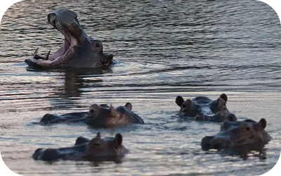
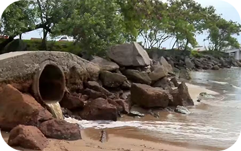
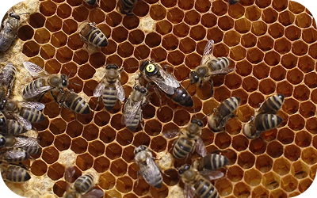
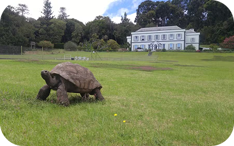

Manada de hipopótamos de Pablo Escobar ameaça ecossistemas e pode ser controlada por eutanásia.
Chuvas mais intensas atingem Norte e avançam para o Sul do país.

Órgão cobra medidas após identificar falhas em obra e despejo de efluentes em Vitória.

A capacidade das rainhas de espécies de mamangabas de respirar e sobreviver debaixo d'água desempenha um papel importante.

Mensagem sobre Jonathan, de cerca de 193 anos, viralizou nas redes; autoridades locais confirmam que animal está vivo.